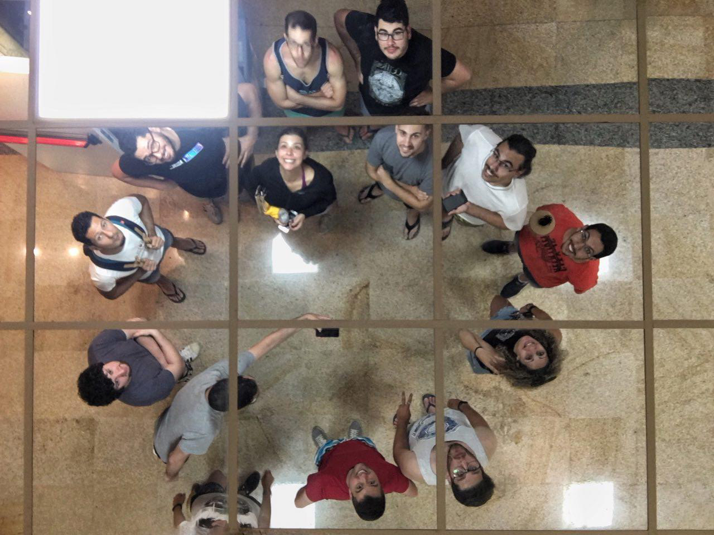

Human Readable E2E Testing
JSDay Canarias 2018
Domingo a las 10 AM?


Ben Ilegbodu
@DanielRamosAcosta

üòç


- ü§ñ Puppeteer
- ü•í Cucumber
- ü•í + ü§ñ
Pupeteer
Chrome Devtools
Chrome Devtools

Chrome Devtools
./chrome --remote-debugging-port=9222
./node --inspect miscript.js


Electron y React Native también implementan el protocolo
// Abrir Chrome con `--remote-debugging-port=9222`
// Obtener el endpoint de la pestaña en: http://localhost:9222/json
const ws = new WebSocket("ws://localhost:9222/devtools/page/712C72EAA9E9269F87B6B8087DE886D5")
ws.on("open", () => {
ws.send(JSON.stringify({
id: 1,
method: "Page.captureScreenshot"
}))
})
ws.on("message", responseStr => {
const response = JSON.parse(responseStr)
fs.writeFileSync("./micaptura.png", response.result.data, "base64")
})
const puppeteer = require('puppeteer');
(async () => {
const browser = await puppeteer.launch();
const page = await browser.newPage();
await page.goto('https://example.com');
await page.screenshot({path: 'example.png'});
await browser.close();
})();
Ejemplos!
Usos de Puppeteer: Exportar a PDF
await page.goto('http://localhost:3000')
await page.pdf({
path: 'CV Daniel Ramos.pdf',
printBackground: true,
margin: {
top: '1.016cm',
right: '1.016cm',
bottom: '1.016cm',
left: '1.016cm'
}
})
await browser.close()
Usos de Puppeteer: SSR
Usos de Puppeteer: Scrapping
bit.ly/jsday2018-pptr-harvestUsos de Puppeteer: Lighthouseconst url = 'https://github.com/trending'
const browser = await puppeteer.launch({ headless: false, defaultViewport: null})
const { lhr } = await lighthouse(url, {
port: (new URL(browser.wsEndpoint())).port,
output: 'json',
logLevel: 'info',
})
const output = Object.values(lhr.categories)
.map(c => `* ${c.title}: ${c.score}`).join('\n')
console.log(output)
* Performance: 0.77
* Progressive Web App: 0.58
* Accessibility: 0.81
* Best Practices: 0.93
* SEO: 0.82
bit.ly/jsday2018-pptr-lighthouseconst url = 'https://github.com/trending'
const browser = await puppeteer.launch({ headless: false, defaultViewport: null})
const { lhr } = await lighthouse(url, {
port: (new URL(browser.wsEndpoint())).port,
output: 'json',
logLevel: 'info',
})
const output = Object.values(lhr.categories)
.map(c => `* ${c.title}: ${c.score}`).join('\n')
console.log(output)* Performance: 0.77
* Progressive Web App: 0.58
* Accessibility: 0.81
* Best Practices: 0.93
* SEO: 0.82
Usos de Puppeteer: Carlo
https://github.com/GoogleChromeLabs/carloOtros usos
- Sacar capturas a componentes en StoryBook
- PaaS (PDF as a Service)
- Usar el sintentizador de voz integrado
- Extraer métricas (cubrimiento, rendimiento...)
Downsides
- Sólo funciona con Chrome
- La API sigue siendo bastante bajo nivel
Cucumber
Que desventajas tienen otros test runners?
context('Navigation', () => {
beforeEach(() => {
cy.visit('http://localhost:8080')
cy.get('.navbar-nav').contains('Commands').click()
cy.get('.dropdown-menu').contains('Navigation').click()
})
it('cy.go() - go back or forward in the browser\'s history', () => {
// https://on.cypress.io/go
cy.location('pathname').should('include', 'navigation')
cy.go('back')
cy.location('pathname').should('not.include', 'navigation')
cy.go('forward')
cy.location('pathname').should('include', 'navigation')
// clicking back
cy.go(-1)
cy.location('pathname').should('not.include', 'navigation')
// clicking forward
cy.go(1)
cy.location('pathname').should('include', 'navigation')
})
Tests legibles por no programadores
Gherkin
Scenario: See the genres of Pulp Fiction
Given I am logged in
When I navigate to the movie details page of "Pulp Fiction"
Then I see "Thriller" at right sidebar in the Genre list
And I see "Crime" at right sidebar in the Genre list
Soporte multidioma
# language: es
Escenario: Ver el género de Pulp Fiction
Dado que he iniciado sesión
Cuando navego a los detalles de la película "Pulp Fiction"
Entonces veo "Thriller" en la lista de géneros de la barra lateral
Y veo "Crimen" en la lista de géneros de la barra lateralSoporte multidioma
# language: em
üìï: See the genres of Pulp Fiction
üòê I am logged in
üé¨ I navigate to the movie details page of "Pulp Fiction"
üôè I see "Thriller" at right sidebar in the Genre list
üòÇ I see "Crime" at right sidebar in the Genre list
Y el código donde está?

Y el código dónde está?
Then('Then I see {string} at right sidebar in the Genre list', async (genreName) => {
// throw si algo va mal
})
Then(/Then I see "(\w+?)" at right sidebar in the Genre list/, async (genreName) => {
// throw si algo va mal
})Puppeteer y Cucumber
¿Qué son Tests E2E?
Ejemplo funcional en Gitlab
bit.ly/jsday2018-pptr-e2eOrganizando el proyecto
¿Dónde incializamos Puppeteer?
¿Dónde incializamos Puppeteer?
En "El Mundo"
class CustomWorld {
_browser = scope.browser
_page = null
async getPage () {
if (!this._page) {
this._page = await this._browser.newPage();
}
return this._page
}
async closePage () {
if (this._page) {
await this._page.close()
this._page = null
}
}
}
Dónde están los steps?
Un paso una función
Given('I am at the {word} page', navigateTo)
When('I enter my username {string} and my password {string}', enterUsernameAndPassword)
Then('I see the {string} page', currentPageIs);
Acciones y Aserciones
- Acciones: Navegar a una página, hacer click en un botón, rellenar un formulario
- Aserciones: Veo la página de login, veo 4 tarjetas
Hacer click en algún sitio
async function clickElement (ctx, selectorScope, elementKey) {
const selector = getSelector(selectorScope, elementKey)
const page = await ctx.getPage()
await page.click(selector)
}
// steps.js
Then('I click the {string}', (ctx, elementKey) => clickElement(ctx, selectors.header.rightMenu, elementKey))
Hacer click en algún sitio
function clickElement (selectorScope) {
return async function (ctx, elementKey) {
const selector = getSelector(selectorScope, elementKey)
const page = await ctx.getPage()
await page.click(selector)
}
}
const clickElementAtHeaderRightMenu = clickElement(selectors.header.rightMenu)
// steps.js
Then('I click the "Login Button"', clickElementAtHeaderRightMenu)
Hacer click en algún sitio
const clickElement = selectorScope => async (ctx, elementKey) => {
const selector = getSelector(selectorScope, elementKey)
const page = await ctx.getPage()
await page.click(selector)
}
const clickElementAtHeaderRightMenu = clickElement(selectors.header.rightMenu)
// steps.js
Then('I click the "Login Button"', clickElementAtHeaderRightMenu)
Combinar varios pasos en uno solo
const typeUsernameAtLogin = typeAt(selectors.login.usernameInput)
const typePasswordAtLogin = typeAt(selectors.login.passwordInput)
export const enterUsernameAndPassword = joinSteps(
typeUsernameAtLogin,
typePasswordAtLogin
)
// steps.js
When('I enter my username {string} and my password {string}', enterUsernameAndPassword)
Combinar varios pasos en uno solo
Scenario: User logs in and sees its profile
Given I am at the home page
When I click in "Login" at the header
And I enter my username "testuser123999" and my password "foobar123"
And I press the "submit" button at the form
Then I see the "Profile" page
And I save a screenshot at "profile-new-user.png"
Combinar varios pasos en uno solo
Scenario: Reach the Add New Movie page
Given the user has logged in
# (...)
Combinar varios pasos en uno solo
Given('the user has logged in', withLoggedUser)
async function withLoggedUser (ctx) {
await navigateTo(ctx, 'login'),
await enterUsernameAndPassword(ctx, 'testuser123999', 'foobar123')
await pressSubmit(ctx, 'submit')
await sleep(ctx, 1)
}
Accedemos al mundo a través del this
Then('I save a screenshot at {string}', async function(page) {
console.log(this.page) // Ok!
})
Then('I save a screenshot at {string}', async (page) => {
console.log(this.page) // Error!
})
No hay soporte para distribución de argumentos
Then('I save a screenshot at {string}', async function(...args) {
console.log(args)
})× And I save a screenshot at "profile-new-user.png" # features\support\steps.js:21
function has 0 arguments, should have 1 (if synchronous or returning a promise) or 2 (if accepting a callback)
Arreglando la pérdida this y la longitud de argumentos
export const bind0 = fn => function () {
return fn(this)
}
export const bind1 = fn => function (arg1) {
return fn(this, arg1)
}
export const bind2 = fn => function (arg1, arg2) {
return fn(this, arg1, arg2)
}
export const bind3 = fn => function (arg1, arg2, arg3) {
return fn(this, arg1, arg2, arg3)
}
Arreglando la pérdida this y la longitud de argumentos
Given('I am at the {word} page', bind1(navigateTo))
export async function navigateTo(ctx, pageKey) {
const page = await ctx.getPage()
await page.goto(getUrl(navigation, pageKey))
}
Creando selectores fáciles de tracear
page.click(selectors.header.rightMenu.Login)
Creando selectores fáciles de tracear
export const selectors = {
title: 'title',
header: nestedSelector('header', {
rightMenu: nestedSelector('.right .primary', {
'plus icon': nestedSelector('li:first-child > div', {
'Add New Movie': 'a[href="/movie/new"]'
}),
Login: 'a[href="/login"]',
'Sign Up': 'a[href="/account/signup"]',
})
}),
login: {
usernameInput: '#username',
passwordInput: '#password'
},
movieDetails: {
topBilled: nestedSelector('section.top_billed', {
eachActor: nestedSelector('.card', {
actorName: 'p a',
characterName: '.character',
})
}),
eachGenre: 'section.genres li'
},
commonElements: {
submit: `main input[type="submit"]`
}
};
Creando selectores fáciles de tracear
console.log(selectors.header.rightMenu.Login)
// 'header .right .primary a[href="/login"]'
Evitar seleccionar por elementos del DOM / clases
const MyButton = () => (
)Ventajas con Puppeteer
Ventajas con Puppeteer
Coverage out of the Box
// getPage
await Promise.all([
this._page.coverage.startJSCoverage(),
this._page.coverage.startCSSCoverage()
]);
// closePage
const [jsCoverage, cssCoverage] = await Promise.all([
this._page.coverage.stopJSCoverage(),
this._page.coverage.stopCSSCoverage(),
]);
pti.write(jsCoverage)
Ventajas con Puppeteer
Coverage out of the Box
Ventajas con Puppeteer
Obtener perfil de rendimiento
Ventajas con Puppeteer
Obtener perfil de rendimiento
Scenario: # ...
Given I start tracing
# ...
Then I stop tracing
Ventajas con Puppeteer
Interceptar peticiones de red
await page.setRequestInterception(true);
page.on('request', interceptedRequest => {
if (interceptedRequest.url().endsWith('analytics.js')) {
interceptedRequest.abort()
} else{
interceptedRequest.continue()
}
})Ventajas con Puppeteer
Depuración
Then I place a breakpoint in "funcionesB4.js" at line number 97
Recursos
- End to End Testing Single Page Apps & APIs with Cucumber.js and Puppeteer
- Iconos de Icon Fonts
- Logos de Seek Logo
- Imagen del depurador de Debugging Node.js with Chrome DevTools
- Gifs de GIPHY